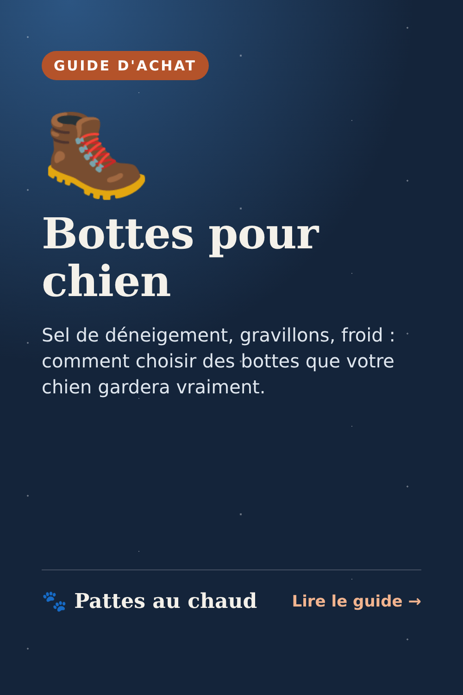
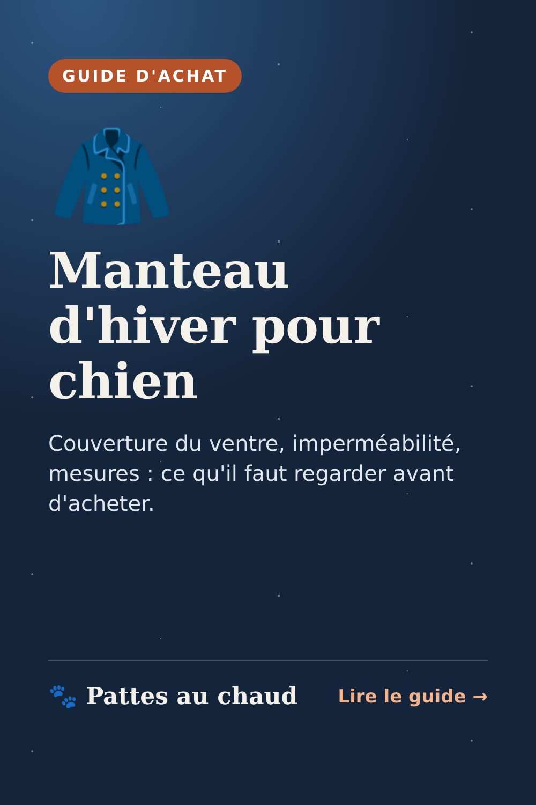
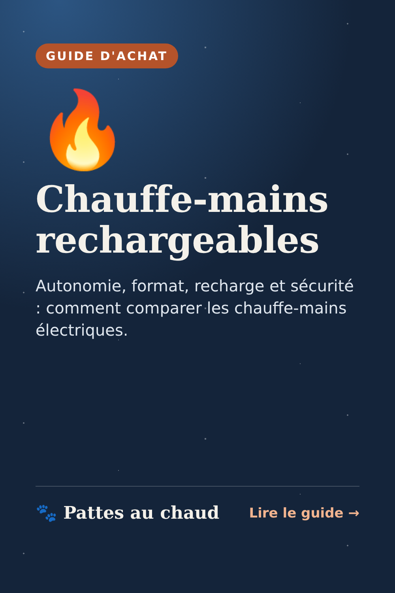
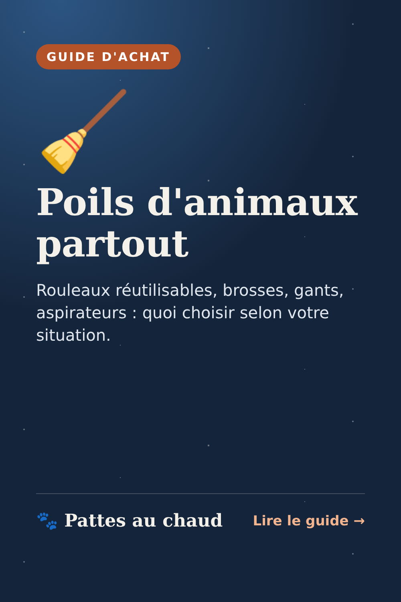
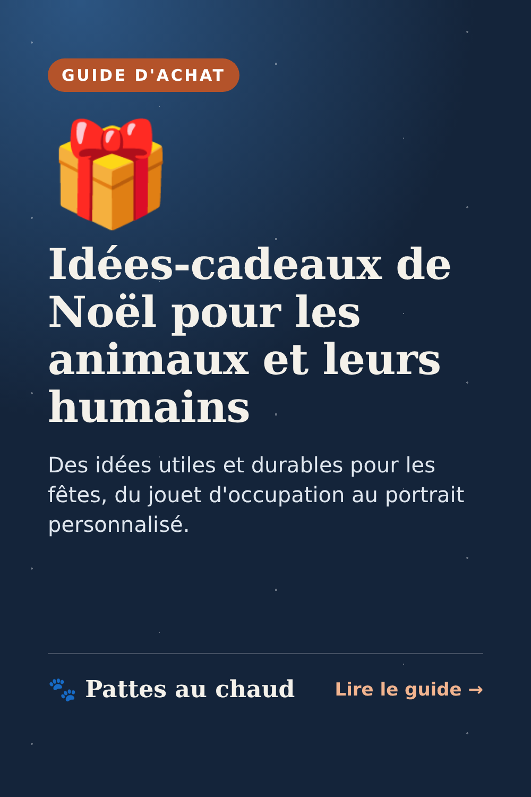
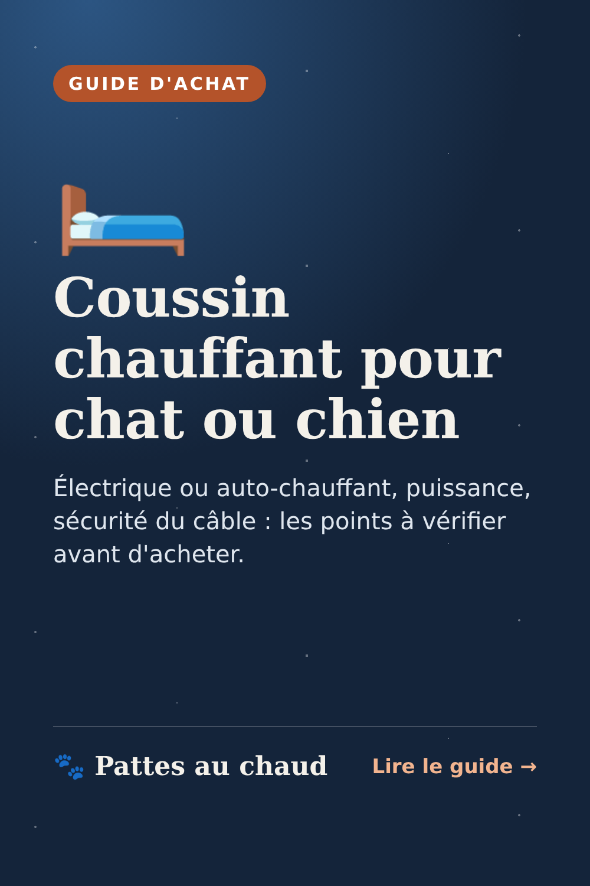
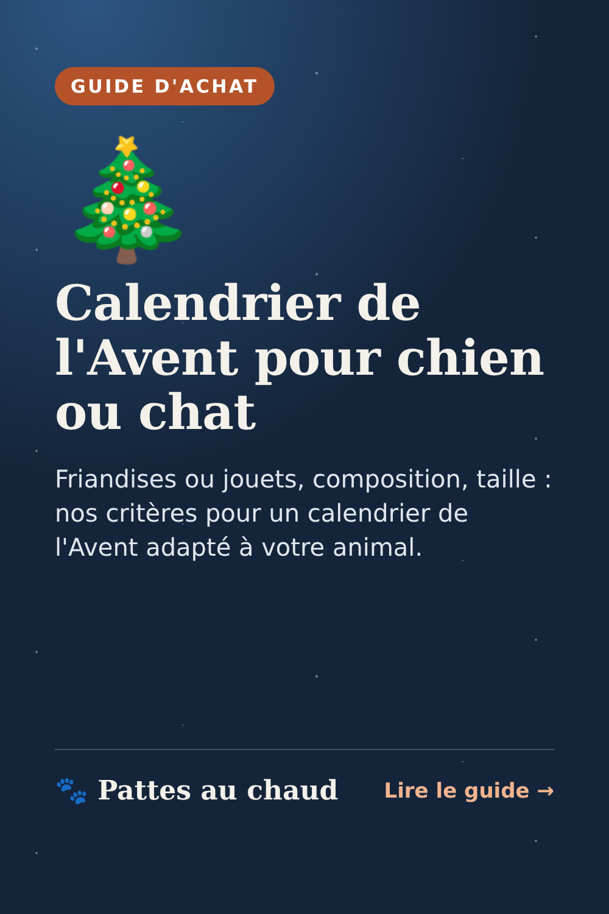
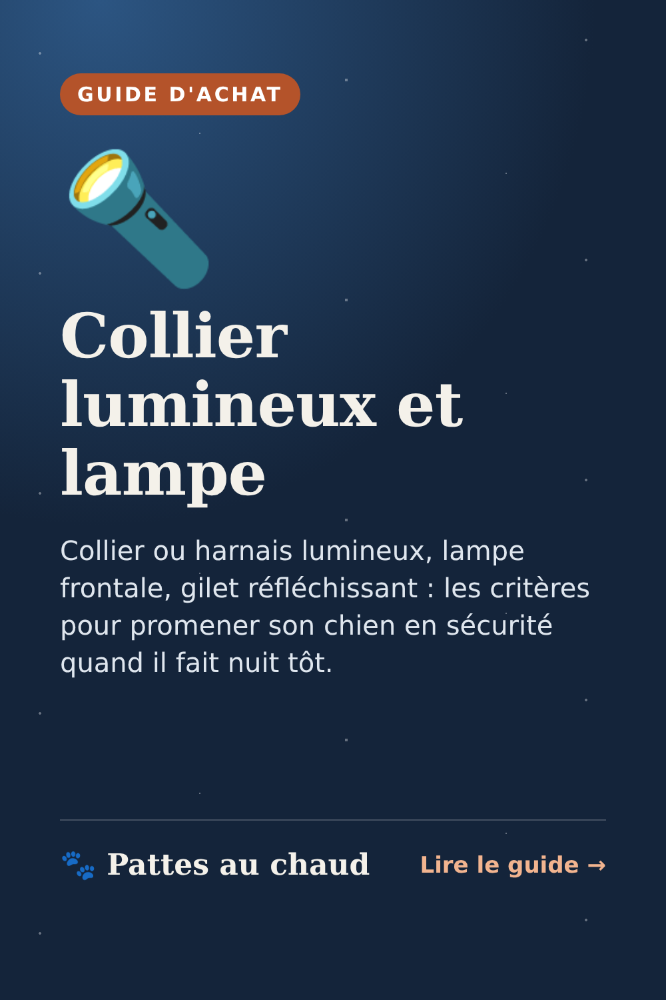
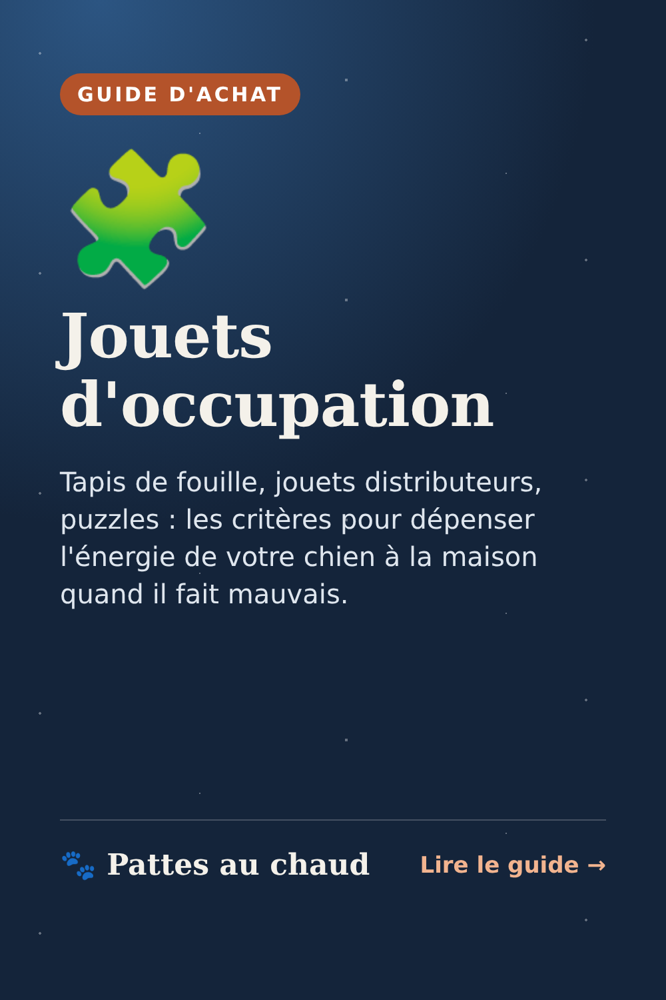
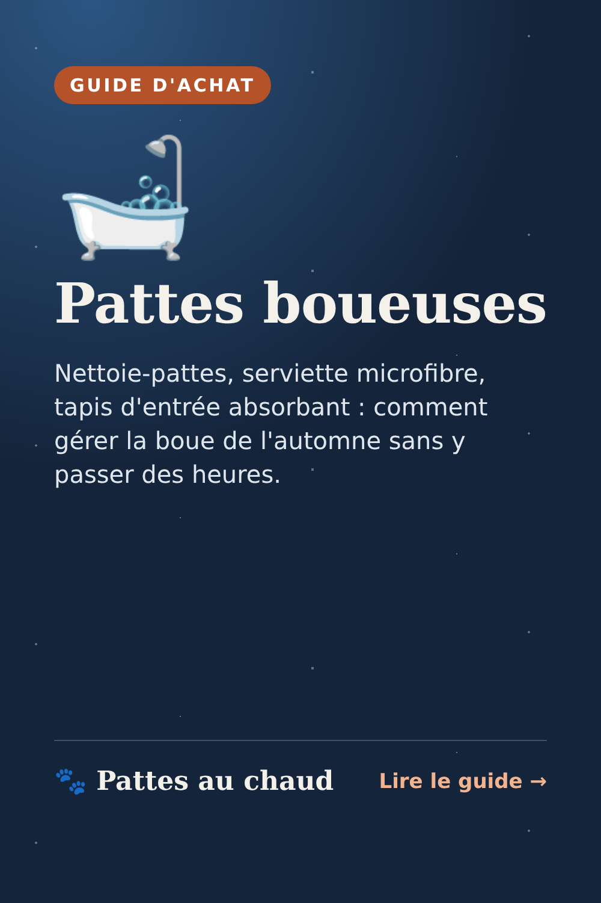

Kit de partage
Page de travail, non référencée. Pinterest : enregistrez l'image, puis créez une épingle avec le titre, la description et le lien. Facebook : copiez un message et publiez-le dans un groupe qui accepte ce type de partage.
Épingles automatiques (Pinterest)
Sur pinterest.fr (version ordinateur) : Paramètres → « Importer du contenu » / « Création d'Épingles en masse » → importez le fichier.
Photo de profil

Messages Facebook
Bottes pour chien (groupes de propriétaires de chiens)
Petit conseil pour cet hiver 🐾 Le sel de déneigement et les gravillons abîment vite les coussinets.
Si vous cherchez des bottes pour votre chien, 3 points à vérifier :
✅ la semelle antidérapante mais souple
✅ une fermeture bien serrée à la cheville (sinon elles tombent en 2 minutes 😅)
✅ la bonne taille : mesurez la patte posée au sol, chien debout
Et au retour de balade, un rinçage à l'eau tiède fait déjà beaucoup.
J'ai rassemblé tous les critères dans un petit guide : https://lattendu1987-dev.github.io/pattes-au-chaud/bottes-chien-hiver.html
(lien affilié : je touche une petite commission si vous achetez, sans surcoût pour vous)
Calendrier de l'Avent (groupes chiens et chats)
Qui a déjà prévu le calendrier de l'Avent de son loulou ? 🎄🐶🐱
Attention, les modèles les plus demandés partent souvent en novembre. Avant de commander :
✅ un calendrier spécifique chien OU chat (les friandises ne sont pas les mêmes)
✅ vérifiez les ingrédients si votre animal a des allergies
✅ pour les jouets, une taille adaptée pour éviter les risques d'étouffement
Mon guide pour bien choisir : https://lattendu1987-dev.github.io/pattes-au-chaud/calendrier-avent-chien-chat.html
(lien affilié : petite commission pour moi, aucun surcoût pour vous)
Coussin chauffant (groupes chats, chiens âgés)
Pour nos vieux matous et nos chiens frileux, un coussin chauffant peut vraiment changer leurs nuits d'hiver 🛏️
Bon à savoir :
✅ les coussins auto-chauffants (sans électricité) renvoient la chaleur du corps : zéro risque, idéal pour commencer
✅ si vous prenez un modèle électrique : arrêt automatique ou thermostat, câble protégé contre les morsures
✅ laissez toujours une zone non chauffée pour que l'animal puisse s'éloigner
Tous les critères ici : https://lattendu1987-dev.github.io/pattes-au-chaud/coussin-chauffant-chat-chien.html
(lien affilié : petite commission pour moi, aucun surcoût pour vous)
Poils partout (groupes chats ou chiens qui perdent leurs poils)
Les poils sur le canapé, ça vous parle ? 😅
Ce qui marche vraiment chez moi :
✅ un brossage régulier (le plus efficace, surtout pendant la mue)
✅ un rouleau anti-poils réutilisable, sans recharges collantes à racheter
✅ une brosse d'angle fixée au mur pour les chats : ils se toilettent tout seuls
Le guide complet : https://lattendu1987-dev.github.io/pattes-au-chaud/poils-animaux-maison.html
(lien affilié : petite commission pour moi, aucun surcoût pour vous)
Promenades de nuit (groupes de propriétaires de chiens)
Dimanche, on passe à l'heure d'hiver 🌙 La balade du soir va se faire dans le noir… et un chien sombre devient presque invisible pour les voitures.
Pour être tranquille :
✅ un collier ou un harnais lumineux rechargeable (mode fixe ou clignotant)
✅ une lampe frontale pour garder les mains libres
✅ un gilet réfléchissant pour le chien, et pour vous en bord de route
Mon petit guide pour bien choisir : https://lattendu1987-dev.github.io/pattes-au-chaud/collier-lumineux-promenade-nuit.html
(lien affilié : petite commission pour moi, aucun surcoût pour vous)
Jours de pluie (groupes de propriétaires de chiens)
Il pleut, il fait nuit tôt… et le chien tourne en rond 🌧️🐶 Bonne nouvelle : 15 minutes de jeu de flair fatiguent souvent autant qu'une balade.
Ce qui marche bien :
✅ un tapis de fouille avec une partie de ses croquettes
✅ un jouet distributeur qu'il fait rouler pour obtenir sa récompense
✅ un puzzle à trappes, en commençant par le niveau facile
Mon petit guide pour bien choisir : https://lattendu1987-dev.github.io/pattes-au-chaud/jouets-occupation-chien-pluie.html
(lien affilié : petite commission pour moi, aucun surcoût pour vous)
Pattes boueuses (groupes de propriétaires de chiens)
Qui d'autre retrouve des traces de pattes jusque dans le salon après chaque balade ? 🍂🐾
Ma routine anti-boue en 1 minute :
✅ un nettoie-pattes (gobelet à picots) avec un peu d'eau tiède
✅ une serviette microfibre qui absorbe vraiment
✅ un tapis absorbant juste derrière la porte
Et une friandise pour le chien qui se laisse faire 😉 Mon petit guide : https://lattendu1987-dev.github.io/pattes-au-chaud/nettoyer-pattes-chien-boue.html
(lien affilié : petite commission pour moi, aucun surcoût pour vous)
Épingles Pinterest


Titre
Bottes pour chien
Description
Sel de déneigement, gravillons, froid : comment choisir des bottes que votre chien gardera vraiment. Guide gratuit, sans faux avis.
Lien
https://lattendu1987-dev.github.io/pattes-au-chaud/bottes-chien-hiver.html


Titre
Manteau d'hiver pour chien
Description
Couverture du ventre, imperméabilité, mesures : ce qu'il faut regarder avant d'acheter. Guide gratuit, sans faux avis.
Lien
https://lattendu1987-dev.github.io/pattes-au-chaud/manteau-chien-hiver.html


Titre
Chauffe-mains rechargeables
Description
Autonomie, format, recharge et sécurité : comment comparer les chauffe-mains électriques. Guide gratuit, sans faux avis.
Lien
https://lattendu1987-dev.github.io/pattes-au-chaud/chauffe-mains-rechargeables.html


Titre
Poils d'animaux partout
Description
Rouleaux réutilisables, brosses, gants, aspirateurs : quoi choisir selon votre situation. Guide gratuit, sans faux avis.
Lien
https://lattendu1987-dev.github.io/pattes-au-chaud/poils-animaux-maison.html


Titre
Idées-cadeaux de Noël pour les animaux et leurs humains
Description
Des idées utiles et durables pour les fêtes, du jouet d'occupation au portrait personnalisé. Guide gratuit, sans faux avis.
Lien
https://lattendu1987-dev.github.io/pattes-au-chaud/cadeaux-noel-animaux.html


Titre
Coussin chauffant pour chat ou chien
Description
Électrique ou auto-chauffant, puissance, sécurité du câble : les points à vérifier avant d'acheter. Guide gratuit, sans faux avis.
Lien
https://lattendu1987-dev.github.io/pattes-au-chaud/coussin-chauffant-chat-chien.html


Titre
Calendrier de l'Avent pour chien ou chat
Description
Friandises ou jouets, composition, taille : nos critères pour un calendrier de l'Avent adapté à votre animal. Guide gratuit, sans faux avis.
Lien
https://lattendu1987-dev.github.io/pattes-au-chaud/calendrier-avent-chien-chat.html


Titre
Collier lumineux et lampe
Description
Collier ou harnais lumineux, lampe frontale, gilet réfléchissant : les critères pour promener son chien en sécurité quand il fait nuit tôt. Guide gratuit, sans faux avis.
Lien
https://lattendu1987-dev.github.io/pattes-au-chaud/collier-lumineux-promenade-nuit.html


Titre
Jouets d'occupation
Description
Tapis de fouille, jouets distributeurs, puzzles : les critères pour dépenser l'énergie de votre chien à la maison quand il fait mauvais. Guide gratuit, sans faux avis.
Lien
https://lattendu1987-dev.github.io/pattes-au-chaud/jouets-occupation-chien-pluie.html


Titre
Pattes boueuses
Description
Nettoie-pattes, serviette microfibre, tapis d'entrée absorbant : comment gérer la boue de l'automne sans y passer des heures. Guide gratuit, sans faux avis.
Lien
https://lattendu1987-dev.github.io/pattes-au-chaud/nettoyer-pattes-chien-boue.html